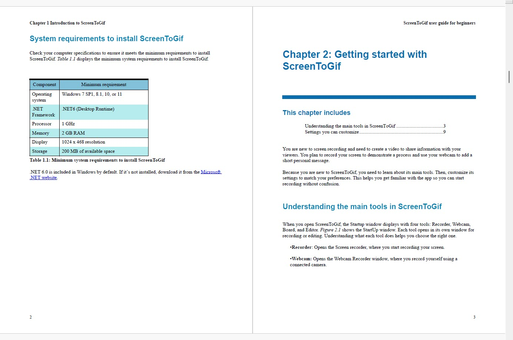

Back to Portfolio

User Guide For Screen Recording Software
ScreenToGif had no documentation, making it difficult for new users to learn and use the software. The goal was to create a beginner-friendly, task-based guide that enables users to learn quickly and complete essential tasks efficiently.
Tools:
Framemaker
SnagIT
Adobe
Acrobat
Industries:
Software
IT-Services
Contribution
As a sole author, I:
- Explored the software firsthand to identify confusing areas and structure content around real user tasks.
- Wrote step-by-step instructions for recording and editing screens.
- Added screenshots to guide users visually through the interface and workflows.
- Created a PDF index, main Table of Contents (TOC), and mini-TOCs for each chapter to make navigation easy.
- Included annotated screenshots to clarify steps and illustrate workflows.
- Included internal and external links to guide users and provide additional resources.
Challenges
I navigated the software while it was still under development, including unstable features like webcam recording. Limited guidance and scarce subject matter expertise required me to rely on hands-on exploration to understand the features and workflows.
Impact
- Delivered a clear, easy-to-follow PDF guide that supports users in completing tasks efficiently.
- Users can navigate the software confidently with structured content, screenshots, and well-organized TOCs.
- Produced a professional, beginner-friendly documentation resource that demonstrates independent work and attention to usability.